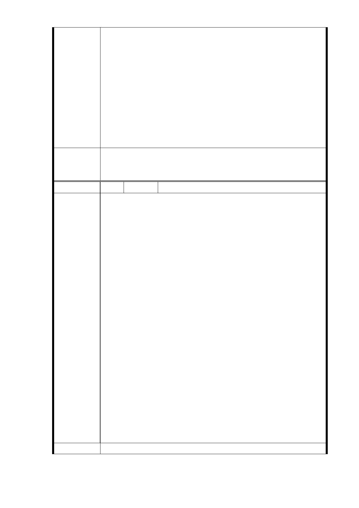

壓井），目前通風井 X（釋壓井）位於松友公園內，係配
合信義線通車之尾軌釋壓所需先行設置，未來 R04 車站東
端所需配置之通風井 Z（包括進氣井、排氣井與釋壓井）
已納入北側基地設置，而通風井 Y（包括進氣井、排氣井）
則規劃納入南側基地設置，由於通風井 X 連接至松友公園
之巷道狹小，且已設置出入口 B 及通風井 X（釋壓井），目
前也已完成，因此松友公園再納入通風井 Y（包括進氣井、
排氣井），係不可行。
2.R04 車站所需之捷運設施包括出入口、通風井等，採均衡
設置於南、北兩側基地進行土地開發（聯合開發），較為
合理適宜。
一、R04 站南側捷二用地，維持公展範圍（基地面積 3,328
委員會決議
㎡），並辦理土地開發。
二、同「市府回應意見」。
編 號 7 陳情人 古文輝（R04 捷二）
本地號建物為七層樓電梯大樓, 興建至今僅 20 年時間, 屋
況仍佳, 未達更新需求. 但台北市捷運工程局因設立 R04 車
站欲同時一併開發車站周邊土地, 在未徵求所有地主同意之
下, 逕行以聯合開發名義強行將周邊土地納入開發案並進行
公展.
經 8 月 14 日捷運局所舉辦之開發說明會之後, 發現不僅四層
樓住戶分不回現有室內居住面積, 本七層樓住戶在捷運局所
提供試算公式下, 室內可使用面積從原本 26 坪縮減至 9 坪
(依附件一公式計算), 約為原先面積之三分之一; 若以捷運
局所宣稱更寬鬆獎勵公式(依附件二公式計算), 室內面積亦
陳 情 理 由 僅 11 坪, 約為原先面積之四成. 在此條件下本 351 地號住戶
們實已無避風躲雨安身立命之處, 但捷運局卻打著＂促進地
區更新繁榮 ＂之口號, 藉機憑空大賺 452 ~ 567 坪以上之容
積(如附件三及附件四), 並沾沾自喜可將自償率由負值提升
為正值(如附件五, 信義東延段工程主要計畫說明書 - 附
冊). 如此瘦了百姓, 肥了官府之行事, 豈是苦民所苦, 民
之所欲常在我心之政府團隊該有作為? 捷運局甚至以地質鬆
軟為由, 如果不參與聯合開發, 日後施工時肯定會發生房屋
損毀傾斜之問題, 屆時住戶不要後悔莫及, 需自行承擔後
果. 捷運局不思解決方案, 反以要脅恐嚇方式逼住戶就範,
實難苟同如此便宜行事之心態.
建 議 辦 法 1. 都市更新原先規劃對象為老舊四, 五層公寓, 七層樓電
- 24 -